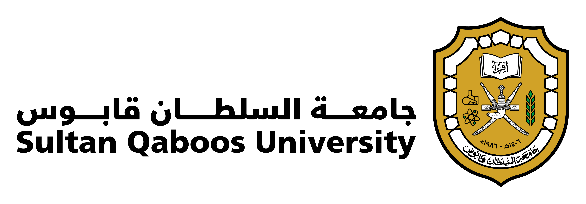

رحلتك الأكاديمية تبدأ من هنا
كل ما تحتاجه عن دراستك
في مكان واحد
منصة ذكية تجمع معلومات الجامعات والكليات والتخصصات والمواد الدراسية في عُمان، مع تجارب الطلاب والمساعد الذكي لمساعدتك على اتخاذ القرار الأفضل.
اكتشف خياراتك الدراسية بثقة ووضوح
خياراتك في عُمان
أبرز الجامعات في سلطنة عُمان
ابدأ بالتعرّف على المؤسسات التعليمية وبرامجها.
الرؤية المستقبلية
نبدأ من عُمان، ونتوسع مع احتياج الطالب
تركيزنا اليوم على الجامعات والكليات في سلطنة عُمان. ومع تطور المنصة يمكن أن تمتد لتصبح دليلاً تعليمياً يخدم طلاباً أكثر في المنطقة.
- ١الجامعات والكلياتالمرحلة الحالية
- ٢المدارس الخاصةتوسع مستقبلي
- ٣المعاهدتوسع مستقبلي
- ٤دول الخليجتوسع مستقبلي
- ٥المنطقة العربيةرؤية بعيدة المدى